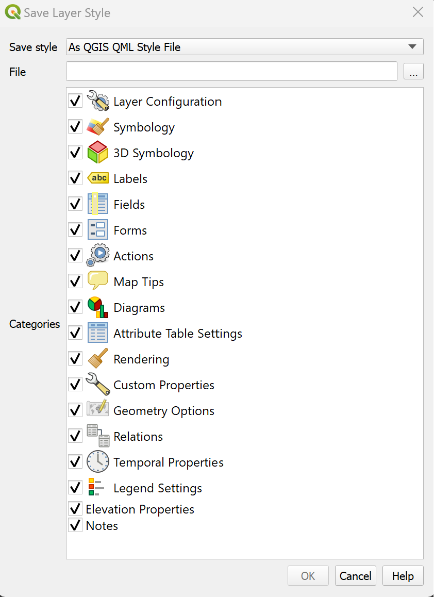

Visualisation of Geodata: Symbology and Colours#
The representation of geodata in maps is essential for providing useful location-based insights. This subchapter will cover the basics of good map design, how to create a map design in QGIS, as well as common mistakes when designing or interpreting maps.
In this chapter we will go over the basics of symbology, colours, and how to adjust individual layers in QGIS to create comprehensive maps.
Recap: Types of Maps
In general, there are two main types of maps: topographic maps and thematic maps.
Topographic maps are intended to be exhaustive, including elements fundamental to localisation (localities, road networks, terrain, hydrography). They display the physical location of objects in the real world. The representation of elements in topographic maps is done using conventional signs (e.g. blue for water, green for forests, yellow for agricultural land).

Fig. 71 Examples for topographic maps#
Thematic maps display the distribution of specific data or statistically processed information, such as population size, disease incidence, flooding risk, etc. The representation of elements on thematic maps is decided according to the rules of graphic semiology.

Fig. 72 Examples for thematic maps#
These two maps use design elements differently. Topographic maps will use symbols and colours out of convention and readability, whereas in designing thematic maps, the symbols and colours you use depend on the context and the information you want to convey.
Visual Variables#

Fig. 73 You can use different graphic signs depending on the type of information you want to display.#
Visual variables are the graphical means for visually transcribing information. The visual variables are shape, size, hue, value, texture, and orientation. You can adjust these variables to appropriately represent the data at your disposal. They allows for the expression of relationship of difference, order, association, or quantity between each element, helping to display different information.

Fig. 74 Visual variables according to Bertin (1967)#
Caution
Visual perception varies from one person to the next according to various capabilities:
Physiological (e.g. colour blindness)
Transcultural (green = nature, blue = water)
Symbology and styling#
Depending on the use case and type of geodata at your disposal, there are multiple ways to visualise geodata in a comprehensive format:
You can change the ‘styling’ and colour of the data.
You can add text labels.
Vector and raster data is visualized differently in GIS-Software.
Styling Panel#

Fig. 75 Styling panel in QGIS 3.30.2#
For each layer in QGIS, there is a styling panel where you can change the symbology, colour and label for the features in that layer. There are two ways to open the layer styling options in QGIS:
Right click on the layer you wish to style and select
properties. A new window will open up with a vertical tab section on the left. Navigate to thesymbologytab.Open the layer styling panel by enabling it under
View>Panels>Styling Panel. Usually, the panel will appear on the right side of map canvas.
On the left of the styling panel you can choose the different tabs to access different styling options.
In the styling panel you can change the styling for all features of a layer, set up categories for different symbols, create labels, and create colour ramps to differentiate between features with variable values.
Video: Opening the styling panel
Symbology#
Symbology is used to change the look of features on a map
It makes maps more visually appealing and easier to read
Colours and styles represent a specific information
Symbology is applied to layers, but within the same layer we can assign multiple styles to features
The symbology of a layer can be changed based on one of the layer’s attributes
Colours#
Colours are arguably the most striking visual variables as they are easily distinguishable. However, depending on the type of data and the information you wish to convey, there are a few things to consider when choosing a colour scheme for your map. The most important variables for colours are the hue, the value (saturation) and the transparency.
Colours schemes can be categorial, sequential, or diverging. If you wish to display different types of buildings or roads, the colour schemes should be categorial. Colour gradients, either sequential or diverging, are used for numerical data or data that can be ordered. For example, for the population sizes of districts a sequential colouring schemes is best to show the relative difference between the values. However, if the data has positive and negative values, a diverging colour gradient should be used.

Fig. 76 Different types of colouring schemes#
When choosing colour gradients, a clear gradient from lighter to darker colours is usually the most appropriate, as the gradation is easily distinguishable and translates well into black and white. In the figure below, examples A and B are not good colour schemes, as it is difficult to make out the gradation and it does not translate well into black and white. You can achieve a clear sequence by grading the saturation of the colour gradient.

Fig. 77 Examples for different colour gradients translated into black and white. Pay attention to the saturation gradient under each example. Source: Stauffer, Reto & Mayr, Georg & Dabernig, Markus & Zeileis, Achim. (2014). Somewhere Over the Rainbow: How to Make Effective Use of Colours in Meteorological Visualizations. Bulletin of the American Meteorological Society. 96. 140710055335002. 10.1175/BAMS-D-13-00155.1.#
Colour gradients can also encompass multiple hues:

Fig. 78 Single hue gradient on the left; Multiple hue gradient on the right.#
Tip
The Colourbrewer website is a quick and useful tool to select and generate colour palettes for your use case.
Colourblindness#
When choosing the colours, you have to keep in mind that colour gradients (especially diverging Red-Green gradients) can be hard or impossible to distinguish for people with colour blindness.

Fig. 79 Different Colour schemes for the Colour Vision Impaired; Source: Jenny, Bernhard, and Nathaniel Vaughn Kelso. (2007). Color Design for the Color Vision Impaired. Cartographic Perspectives, no. 58 (September 1, 2007): 61-67. https://doi.org/10.14714/CP58.270#
Symbology for Vector Data#
You can use graphical variables to style vector data. As we have already learned, vector data can be either points, lines, or polygons. There are different options to symbolize these different types of vector data. In this subchapter, we will focus on a few common examples.

Fig. 80 Symbolization for vector data; Source: White, T. (2017). Symbolization and the Visual Variables. *The Geographic Information Science & Technology Body of Knowledge (2nd Quarter 2017 Edition), John P. Wilson (ed.). DOI: 10.2222/gistbok/2017.2.3#
Note
Remember that the layer’s symbology is saved within your project file, not within your shapefile! If you share a shapefile with a colleague, it will have a different style when they add it to their own project.
SVG-Symbols, Raster images, and Markers
QGIS let’s you use different types markers for symbolization. These can be simple markers, raster images, or SVG-symbols.
Simple markers are simple shapes such as rectangles, circles, or crosses that can be adjusted in the symbolization layer (colour, size, outline, etc.).
If you select raster images, the resolution of the symbol is limited by the amount of pixels in the image. It is not advisable to use high resolution images as symbols on your map because it may overload your PC.
SVG-symbols are scaleable vector graphic symbols. As vector files, they can be scaled to any size while keeping the same resolution. In most cases, if you want to use a more complex symbol (e.g. hospital, school, train station), SVG-symbols are the best option as they let you adjust the symbol (colours, outline, size, etc.)
Using Simple Markers#
Simple Markers are generally used to create the symbols for most elements on a map. For example, simple markers are used to visualise streets, building outlines, waterbodies, administrative boundaries or other polygons. Most simple markers consist of a fill and an outline. The shape of the marker is generally dependent on the type of vector data (point, polygon, or line).
The fill determines the fill colour of the symbol. You can change the colour and transparency. You are also able to make more complex fills such as a line pattern fill, or an SVG-symbol fill.
The outline determines the colour, type, and thickness of the outline. Next to the colour and transparency, the outline is the most critical for distinguishing between different elements. For example, thicker lines for roads usually signify roads of a higher order (such as highways), while thin dashed lines might signify footpaths, inaccessible to road vehicles.
Using SVG-Symbols#
Open the styling panel and open the
single markeroptions.Under
Symbol layer type, select “SVG Marker”Scroll down to the SVG-Browser. Here you will find all the folder of your installed SVG-libraries.
Adding an external SVG-library#
If you have a library of SVG-symbols as a folder you can add them to your Styling manager.
Open the style manager:
Settings>Style ManagerClick on
Import / Exportand selectImport itemsNavigate to the location where you have saved the library or style and select the file (in most cases .qml but the file type can also be .xml)
Now you can select which symbols you wish to import. In most cases, you can select all symbols.
Click on
Import
The new SVG-symbols are in your SVG library.
Labels#
Labels are text that display information or values of the data. In QGIS, you can either select Single Labels or Rule-based Labelling. For each option, an attribute (value) that will be displayed on the map. For example, the name of a city or region. Additionally, you can change the font, font size, colour and some other styling options for the label text. When you create a map, you can add labels to help your reader understand the map quickly. However, be aware that too much text information can overload the map with too much information for the reader to process.
Single Labels and Rule-based Labeling#
QGIS offers two methods to display labels: Single Labels and Rule-based Labeling
Single Labels#
Creates a single label style for every feature in the layer. You can select a attribute (value) which will be displayed. For example, the name of a settlement. You need to know which attribute displays the information you want to display. Look at the attribute table of the dataset to find it out.

Fig. 81 Single labels for each administrative region (adm1) in Nigeria. The reader is able to assign each label to the respective administrative entity.#

Fig. 82 Assigning the correct attribute value in the labeling options. QGIS needs to know which attribute (column) of the attribute table should be displayed as a label. In this case, we want the name of the administrative region (ADM1_EN) to be displayed.#
Adding Single Labels to a Layer#
In the styling panel, click on the
Labels-tab underneath the Symbology tab.Select
Single labels.Valueis where you choose the attribute that will be displayed as a label. For example*ADM1_EN*will display the English names of Nigerian states for each feature in the data set.Let’s change the font: Open the font dropdown menu and select Arial. Make the text
Boldin the Style dropdown menu. Change the colour by clicking onColour, and change theSizeto 8 ptLet’s add a white buffer around the label. In the
Labelstab, you will find a list with different options to style the labels. Right now, we are in theTextmenu. SelectBufferand check theDraw text bufferoption. This will make the labels stand out more on dark or crowded maps.Click
ApplyandOK.

Fig. 83 Setting up labels in QGIS 30.30.2#
Attention
Single Labels are not always useful. For example, if the dataset is too big, or you only want to display certain features in the dataset. In the example below, there are too many settlements to display labels for each settlements. Instead, it might be useful to only display the regional and national capitals. For such a use case, Rule-based Labeling is ideal.

Fig. 84 Single Labels was selected to display the names of the settlements (red dots). A map with so much text information is unreadable and the information can hardly be understood.#
Rule-based Labelling#
Create rules using expressions to select accurately which features are to be labeled. Each rule can have a different text formatting. Use this if you want to have more control over the information that will be displayed as labels. For example, you can filter your data to only display the names of regional capitals.

Fig. 85 Rule-based labeling allows you to filter datasets. This way, you can display the labels only for selected features without altering the dataset.#
The rules, or filters, are based on an expression. You can use the 
Expression string builder to the right of the Filter option in the label panel.
Adding Rule-based Labels to a Layer#
In the styling panel, click on the
Labelstab underneath the Symbology tab.Select

Rule-based Labeling.Add a Rule by clicking on the
+-button in the left corner of the styling panel. A new window will open in the styling panel. In this window, you will enter the rule (Filter) and customize the label font, size, and placement. Additionally, you can enter a description.Enter a Filter (red box in the figure below). The easiest way is to use the
Expression string builderto the right of the Filter option. Click on the -Symbol. A new panel will open.
-Symbol. A new panel will open.In the Expression String builder enter a rule. In the example in the video below, we want to only display settlements that are either national or regional capitals. This corresponds to the String
("CLASS" = 1 ) OR ("CLASS" = 2). We know this because we know our data and have looked at the attribute table beforehand.Click
OKSet the font and font size.
Click
Apply.
Note
To add rules to your labels, you need to be familiar with your data! Look at the metadata (in the properties or at the source) and take a look at the attribute table. Think about what the different columns mean and identify the attributes. This might not always be easy, as they might have abbreviated names, but as you work more with data, this will become easier.
Below are some further considerations to keep in mind when using labels:
Only display information that serves the purpose of the map or is helpful to the reader. Useful information can be the name of a settlement or a place, so the reader can assign a certain symbol on the map to this particular place.
If you want to display different types of information as labels, the font needs to be different so the reader can differentiate between the different types of information that is displayed. A good practice is to display the labels in a similar colour to the objects it is referring to. For example, dark blue text for the labels of light blue bodies of water, or brown text for the labels of light-brown houses.

Fig. 86 A good example of label placement and font. Pay attention to the text colours and orientation. Every label can easily be attributed to the correct cartographic feature. (Source: Axis Maps)#
Attention
In most cases, displaying numerical values as labels is confusing to the reader and makes the map to complex. In most cases, for numerical data, you can choose a different visualization such as colours or symbol size.

Fig. 87 Numerical Labels#

Fig. 88 Graduated Symbology#
QGIS places the labels automatically. Sometimes, if you are using a lot of black outlines or dark colours, black text is hard to read on the map. In that case, you can add white buffer around the text to make it visible.

Fig. 89 A label without a text buffer (left) and a label with a white text buffer (right)#
Note
QGIS renders labels automatically.
Sometimes labels can obstruct other symbols. In that case, you can either adjust the placement of the labels in the Label tab, or use the 
Move a Label, Diagram, or Callout-tool in Label toolbar
By default, QGIS renders the labels so that they don’t overlap with other labels. This means that not all the labels will be visible if the data is dense or rendered close to each other. You can optimize the rendering under the rendering option.
If you are interested in how to set up and style labels further, take a look at these wiki articles:
You can also read further in the article “Labeling and text hierarchy in cartography” by Axis Maps.
Symbology for raster data#
As we have already learned, raster data are basically a grid of pixels with different (numerical) values. As such, you can’t style the shape, fill or outline of raster data. Raster data is visualized by assigning a colour ramp to the pixel value. QGIS offers several options to visualise raster data. For example, you can create a hillshade with digital elevation model (DEM).
Assigning a colour gradient to raster data#
To assign a colour gradient for raster data, you need to:
Open the
styling panelfor the raster layerNavigate to the
Symbology tabBy default, the colour scheme is set to Singleband Gray (if you only have one colour band in the data set). Click on
Singleband Grayand switch toSingleband PseudocolourClick on the arrow to the right of the colour ramp. Here you can choose a pre-made colour ramp
You can modify the colour ramp by clicking on the colour ramp.

Fig. 90 Colour Ramp Selector#
In the colour ramp selector, you can adjust each colour step. On the bottom, you can see a plot for the Hue, Saturation, Lightness and Opacity. The last three in particular are useful to understand how your colour ramp will appear. Gradients from light to dark are easier to read: Check if the plot for the Lightness has a more or less linear plot.
Styling a digital elevation model#
Elevation data sets are frequently used to communicate the terrain on a map. By default, an elevation model will be displayed with a gray colour ramp. However, if you don’t need the to know the elevation at certain points, you can choose to display the hillshade of the terrain. Hillshading will simulate the shadow of the terrain as if it would be exposed to a light source. In this example, we will use the elevation raster data (.tiff) of Algeria from the Humanitarian Data Exchange platform (humdata.org) To achieve this,
Open the
symbologytabClick on
Render typeand selectHillshade. You will have an option to select the direction of the light. Conventionally, the light source is positioned in the North-West, so we can keep the default settings. In some cases with rough terrain, it can be useful to make the hillshade Multidirectional.The hillshade will be very dark and cover most of the map. We need to make it lighter…
Inverting the colour ramp#
In some cases, the colour ramp should be inverted to make it easier to read the map:
Click on the arrow next to the Colour ramp to open the dropdown menu.
Click on
Invert Colour Ramp.
Exporting and Importing Styles#
The layers in QGIS are saved separately from the settings and styles of a QGIS Project. This means that if you load the same layers into a different QGIS project, the symbology and styling of the data will be different. QGIS lets you save the symbology and styling of a layer as a separate file (.qml-files). Working with .qml-files saves you a lot of work and assures consistency between your maps.
A .qml-file saves the information of a particular layer. This includes the colours, outlines, shapes, labelling, as well as the Layer configuration, attribute table settings, and other options you have set for a layer in your QGIS project that are not related done to the data files themselves. You can choose whether to save only the colour symbology or any additional information.
You can export a style into the same folder as the data so your colleagues can apply the same styling when loading the data into QGIS. Some organisations may also use standarized symbols or colours in their maps.
For example, if you want to send a layer to your colleague with the same styling as you, it is best to check the “Layer properties”, “Symbology”, and “Labels” categories (and any additional styling options you have set). If you only wish to save a certain colouring, line thickness, or labeling style, you only need to check the respective boxes.
Saving or exporting styling settings#
Open the styling panel and click on
Styles. A dropdown menu will open with the option to export the layer styling.Since in this case, the styling is for exactly that dataset, you can leave all the boxes checked.
Select a location and name for the styling. The styling will be saved as a
.qmlfile. Make sure it is saved in the same folder as the dataset and give it the same name as the corresponding dataset. This way it will, when loading the data into QGIS, the styling will automatically be applied.
{kind=link}

Fig. 91 Save Layer styling window in QGIS 30.30.2.#
When working with similar data (e.g. building types or flooding risk), it is useful to have template styles, that can be quickly loaded into your QGIS-project or saved in your Styling Template library.
Tip
When a styling is saved in the same location as the data and has the same name as the corresponding dataset, the styling will be automatically applied to the layer when loading the data into QGIS!
Loading a style into a QGIS-project#
Open the style manager:
Settings>Style managerClick on
import/exportand selectimport itemsNavigate to the folder where the style is saved and click import.
The style should now be available as a preset in the styling panel.
Note
You can also import styles directly in the styling panel of a layer. But it will not be added to your style library unless you save it into your library.
Using IFRC-Symbols#
With the plugin “Plugin Resource Sharing”, you can install symbol and icon libraries used by the Red Cross and UN, as well as other useful symbols.
Install the “Plugin Resource Sharing” by opening the plugin installation window and searching for the plugin.
Once installed, open the plugin interface by clicking on
plugin>Plugin Resource Sharing.Search for packages by the Red Cross and the UN.
Install the packages.
Now the symbols should be available in the styling manager in the SVG folder.
Tip
Make sure to check out the other resources available in the resource sharing plugin and see if they are useful to you.
Further Resources#
Cartography Guide by Axis Maps
Tutorial on how to import the SIMS Colour Palette into QGIS
Tutorial on how to create a shaded relief map in QGIS